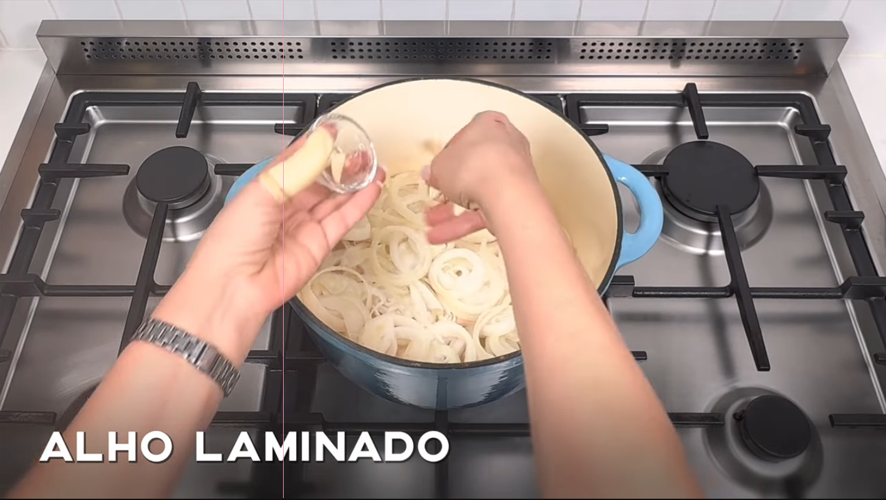
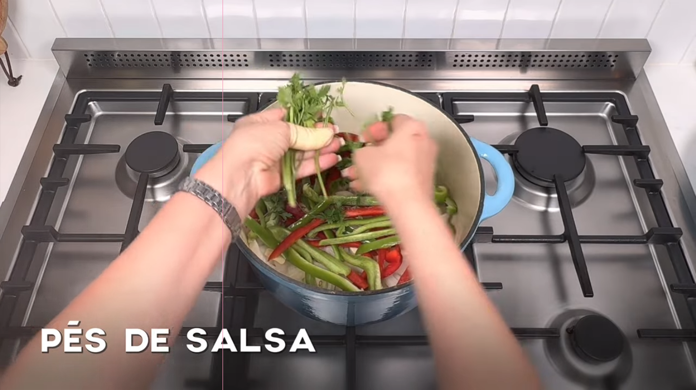
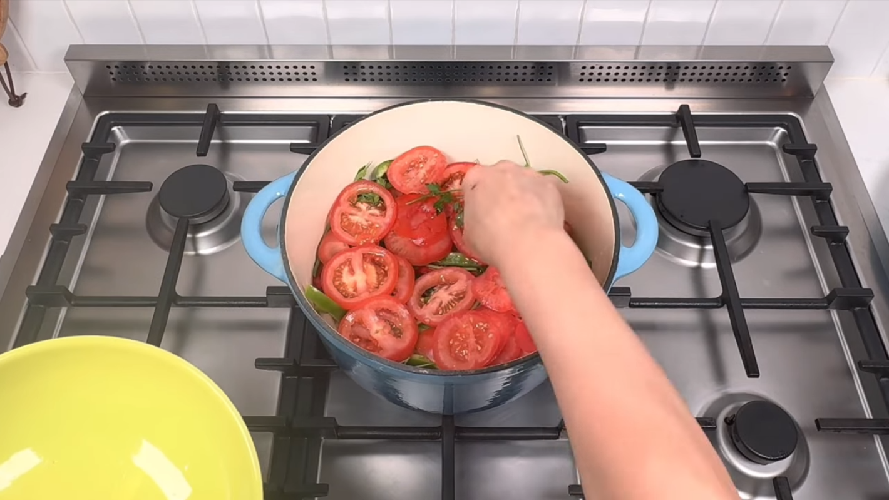
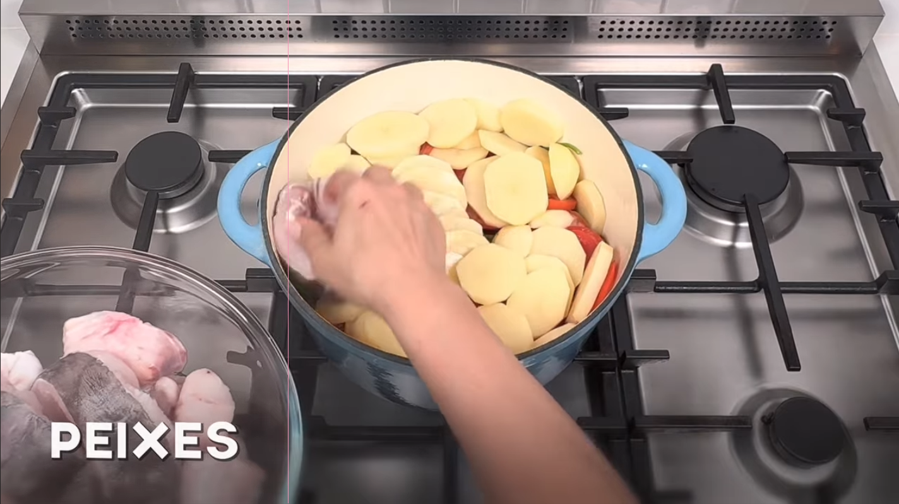
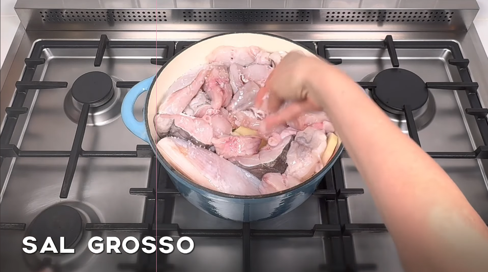
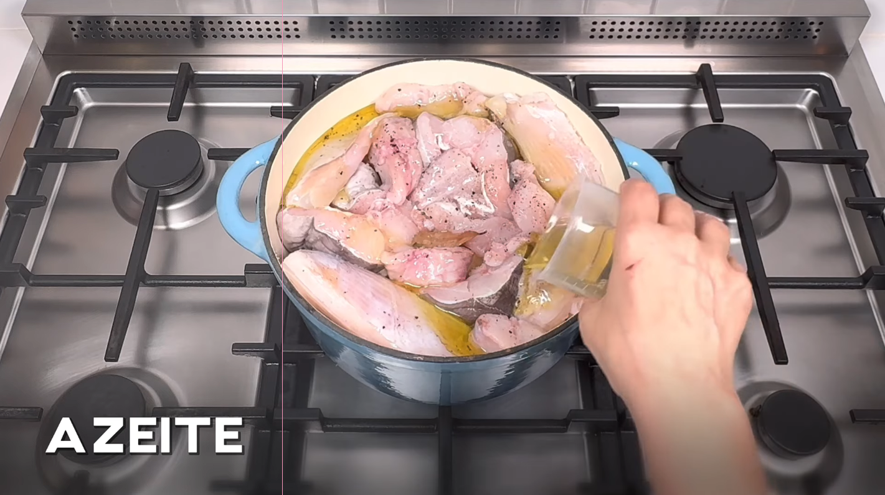
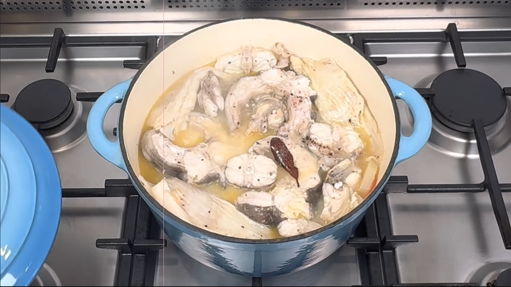
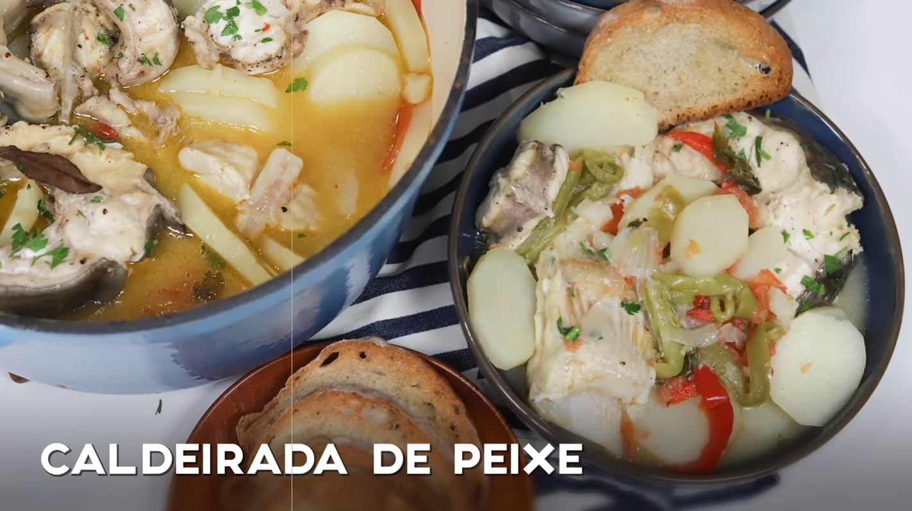

Receita de Caldeirada de peixe
4 Porções
- Qualquer Peixe
- Pimento vermelho, verde e amarelo
- Cebola
- Batata para cozer
- Tomate Maduro
- Azeite
- Vinho Branco
- Sal
- Pimenta
- Para ser mais prático comprei um preparado com vários peixes próprio para caldeirada, mas pode-se optar por comprar as variedades de peixe que se quiser avulso.
- A caldeirada faz-se por camadas, para começar no fundo do tacho colocam-se as ameijoas seguido da cebola cortada em meia lua, os pimentos em pedaços pequenos, o tomate cortado em meia lua as batatas ás rodelas e o peixe.
- Rega-se com azeite, vinho branco e tempera-se com sal e pimenta. Estas camadas são repetidas até acabar.
- Este prato é feito sempre em lume brando, sem mexer, podendo apenas agitar-se ligeiramente o tacho.
- Desliga-se o fogão cerca de 15-20 minutos depois de levantar fervura.







